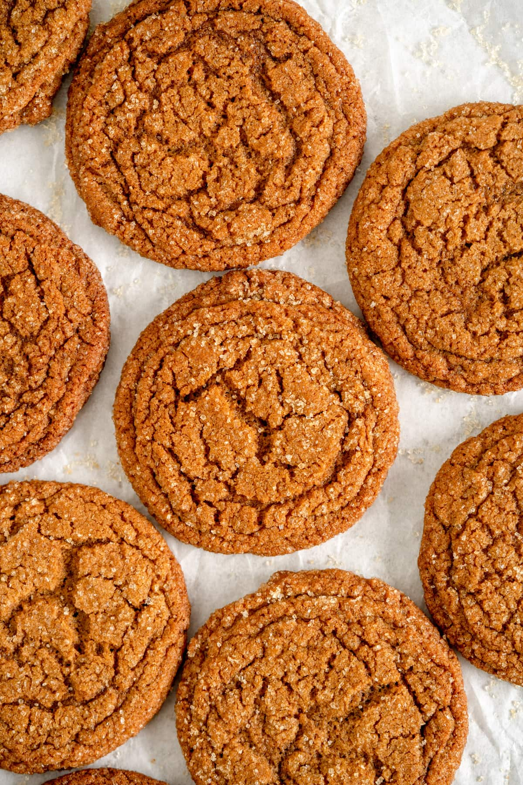

Preheat the oven to 350°f / 180°c. Line 2-3 baking sheets with parchment paper (you may have to bake these in several batches depending on how many trays your oven can tolerate).
In the bowl of a stand mixer fitted with the paddle attachment, cream the butter, brown sugar, granulated sugar, and molasses together on high speed until light and fluffy. Add the egg and vanilla and mix to combine. Sift together the flour, baking soda, salt and spices in a small bowl. Add to the mixer and mix on low until just combined.
Using a 2 tablespoon spring loaded cookie scoop, scoop balls of dough (approx 45g each), and place them onto a prepared baking sheet. I like to do 6 on each sheet then increase to 8 when I know how much space they will take up. Roll each ball of dough between your hands to form a ball, then roll in the turbinado sugar before placing on the baking sheet. Leave any mixture that you are not baking off just yet in the bowl and scoop just before baking.
Bake the cookies for 16-17 minutes or until puffy and set around the edges. Remove from the oven, and if you like, scoot the cookies into a rounder shape using a cookie cutter slightly larger than the cookie. Cool on the pan for 5 minutes - the cookies will deflate slightly as they cool. Transfer to a wire rack and allow to cool completely. Repeat the baking process with the remaining cookie dough.
Store cookies in an airtight container at room temperature for up to a week.

Clarkson, E. (2025, October 22). 30 minute Thin and crispy gingersnap cookies. Cloudy Kitchen.Original Recipe
Clarkson, E(2025, October 22), Image: gingersnap-cookies-with-sugar-coating-1.jpg Original Image
W3Schools.com. (n.d.). Flexbox
{kind=link}